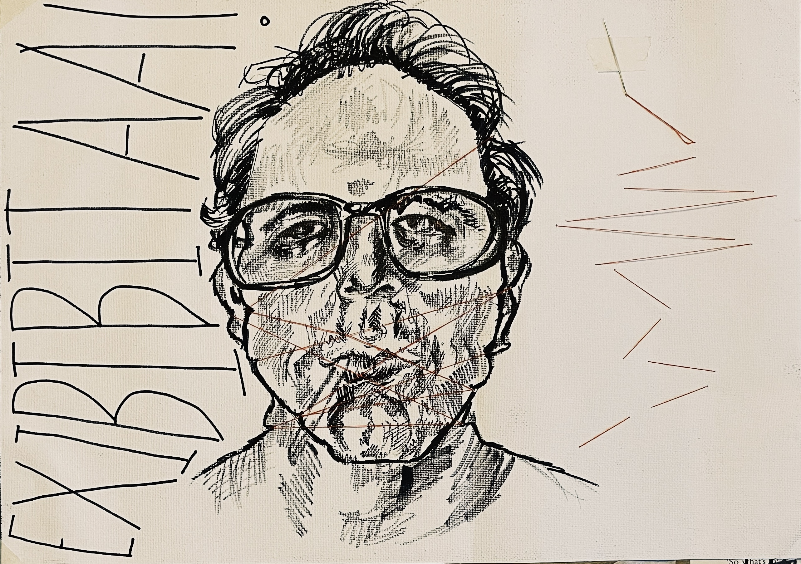
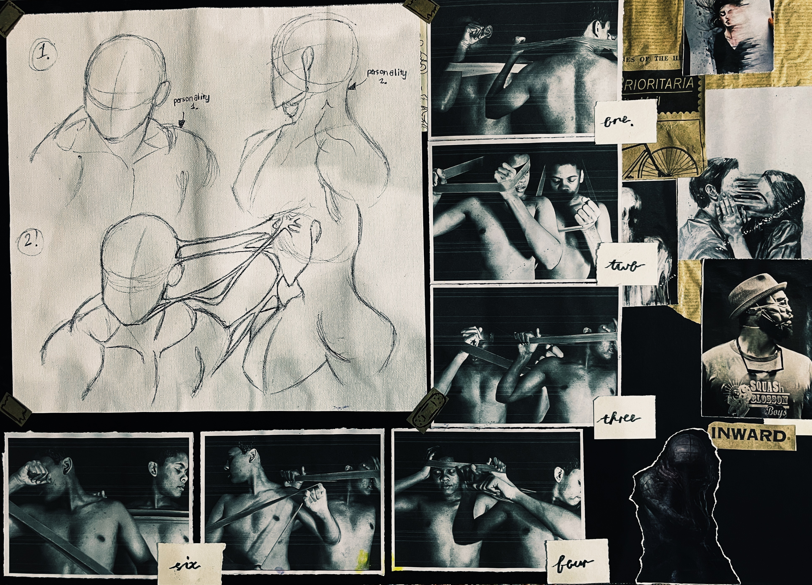
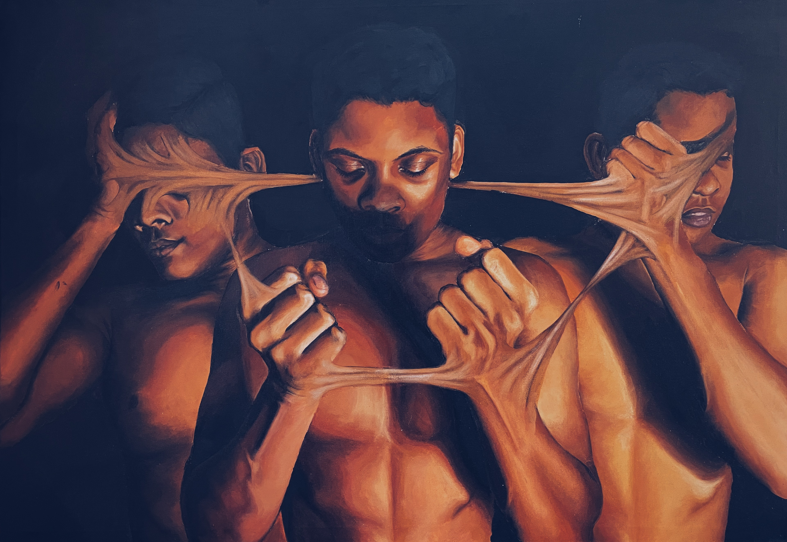

My traditional artworks consist of conceptual and experimental pieces in a range of mediums.
These works represent my exploration of different techniques and styles.
Creative Brainstorming
Creative brainstorming concepts and styles

Mixed Media and Tools
Combining unconventional media with each other. Marker and thread on canvas.

Composition and reference studies
Exploring compositional space and balance
Exploration through medium
Creating appropriate atmosphere through media, colour and lighting.

Rendering the Idea
Now comes the fruiting of the idea, combining the idea and the visuals together